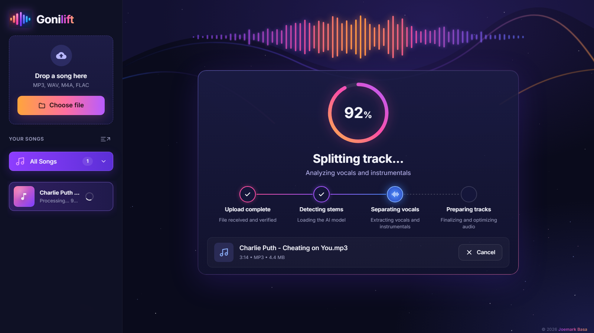
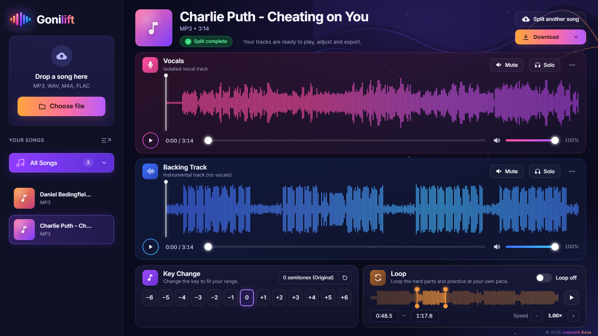

How to remove vocals from a song for free
Want a karaoke version of a song that doesn't have one, or the singer's voice on its own so you can study it? A few years ago that meant phase-cancelling tricks that left a hollow, watery mess. Today, AI models trained to recognise voices can lift the vocal out of a finished mix cleanly. Here is how to do it for free, on your own Windows PC.
The short answer
- Download Gonilift (free, open source) and double-click
install.bat. - Open Gonilift and drop your song into the window.
- About a minute later you have two tracks: Vocals and Backing Track.
- Mute the vocals for karaoke, or download both as WAV files.

Why "free" vocal removers often aren't
Most online vocal removers follow the same pattern: you upload your song to their server, wait in a queue, and after a few free tries you hit a monthly limit or a paywall. Some keep your file. Some lower the quality unless you pay. That's a reasonable business for them, but it's a poor deal if you just want to practise singing every night.
A local app avoids all of that. The AI runs on your own computer, so there's no upload, no queue, no limit, and no account. You also keep working when the internet is down.
How the AI separates a voice from the music
Gonilift uses a MelBand RoFormer model, a type of neural network built for music source separation. It looks at the song as a picture of sound (which frequencies are loud at each moment) and predicts which parts of that picture belong to the singer. Everything it predicts as voice becomes the vocal track; the rest becomes the backing track.
Step by step with Gonilift
1. Install it once
Unzip Gonilift somewhere outside OneDrive (for example C:\Apps\Gonilift) and double-click install.bat. It sets up everything inside that folder in 5 to 15 minutes. The first song you split also downloads the AI model once.
2. Drop in a song
MP3, WAV, M4A, FLAC, OGG and AAC all work. Drop several and they wait in a queue.
3. Practise or download
The player shows both tracks with their waveforms. Press Mute on Vocals for a karaoke track, or turn the vocals down so the singer guides you quietly. Download saves the vocal and backing as separate WAV files.

How long does it take?
On a laptop with an NVIDIA RTX 3050 graphics card, a 3-minute song takes about 40 seconds. Without an NVIDIA card it still works on the processor, but it takes several minutes per song.
A note on copyright
Removing vocals for your own practice is a common, personal use. Splitting a song doesn't give you any rights to it, though, so don't publish or sell tracks made from songs you don't own.
Try it
Gonilift is free and open source. Download it for Windows, or read the next guide: how to change a song's key to fit your voice.